An innovative approach
that reaches new audiences
How can we expand the market?
We go beyond traditional methods to produce high-quality Orthotics that finally meet the needs of overlooked customers.
Then
Traditionally designed for
orthopedic correction, used only
by a limited number of patients.
Our Way
Custom-fit to the user’s needs and condition. Designed for athletes, seniors, and kids for daily, pain-free
From better performance to everyday comfort — we expand orthotics beyond limits.
Who Uses Our Orthotics?
Designed to support athletes, seniors, and children in achieving pain-free mobility and enhanced stability during daily activities.
Medical
By combining high-resolution 3D scanning to detect even the smallest structural abnormalities with clinical specialist collaboration, we deliver customised orthotic solutions that restore foot health, ensure lasting recovery, and prevent recurrence.
Case 01
Heel Discomfort & Pain
Case 01
Heel Discomfort & Pain
48 year old female, office worker
Symptoms Morning heel pain immediately upon waking, worsens with prolonged standing
Findings Concentrated pressure on the calcaneus, collapse of the medial arch
Orthotics
Provide medial arch support
Add shock-absorbing heel pad
Reinforce the heel cup
Details and Considerations
Use top cover and base materials with excellent cushioning and shock-absorption. Incorporate high-support reinforcement in the middle layer. Include resin elements to reduce heel pressure. Utilise technical materials with superior cushioning and shock-absorption for pain relief. Employ a heel ring to enhance stability and protect the heel. Recommended Footwear : Standard shoes or cushioning-focused shoes For narrow-width shoes, adjust top cover and base materials and include extra support elements to ensure proper fit and function.
Layer
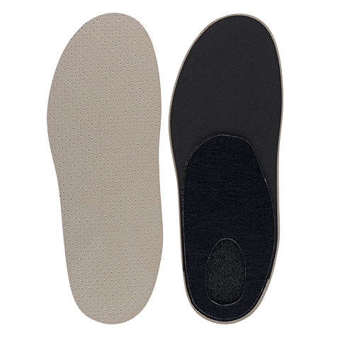
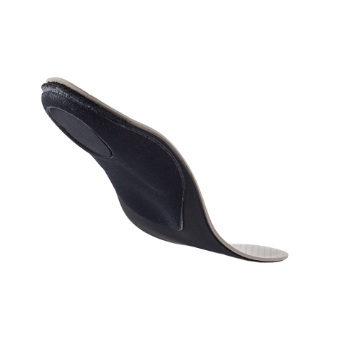
Top cover 2.5 mm Podiamic™ 125 MP, brown
Foam base 2 mm Podiamic™ 180, black
Pad 4 mm Podiane®+, black
Reinforcement Podiaflex® on 1.7 mm hard fabric, black
Resin Elementes 1 mm Transflux®, black
Separate pad Noene®, black
Corrective Element
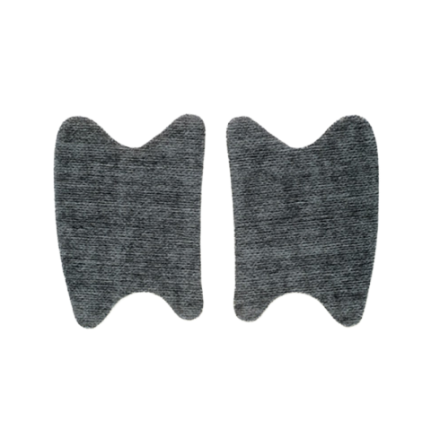

Fabric Midfoot Reinforcements
Its shape reinforces internal and external supports
without adding volume to the rearfoot.
Heel Ring Elements
Stabiliser element. Shore 56.
Case 02
Diabetic Foot with Neuropathy
Case 02
Diabetic Foot with Neuropathy
65 year old male, Type-2 diabetic for 10 years
Symptoms Numbness, fatigue pain and minor lesions on the plantar surface
Findings Diffuse midfoot overpressure, reduced protective function
Orthotics
Employ dedicated materials engineered for neuropathic feet
Utilise a full-foot pressure-dispersion pattern
Incorporate a top cover that minimises skin friction
Details and Considerations
Use an antimicrobial, soft, hypoallergenic top cover to minimise friction. Select a highly breathable material for efficient moisture wicking. Provide support without excessive rigidity. Include cushioning elements over lesion sites. Focus on redistributing plantar forces based on pressure mapping.
Layer
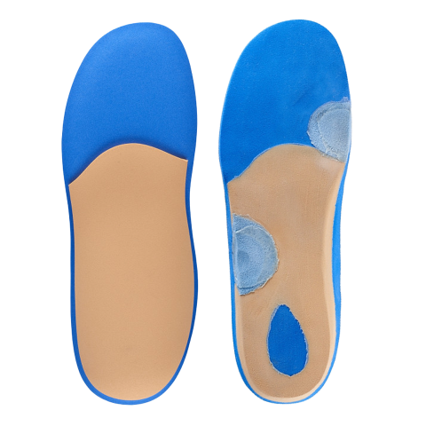
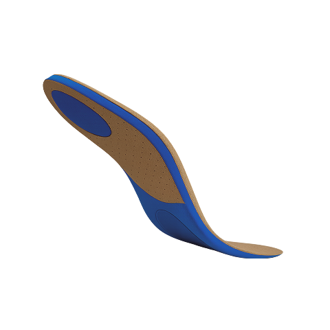
Top cover 3 mm Podiamic™ 160 MP, flesh-coloured
Reinforcement 5 mm Orthomic®, flesh-coloured
Foam base 10 mm Podialene™ 100, blue
Corrective Element
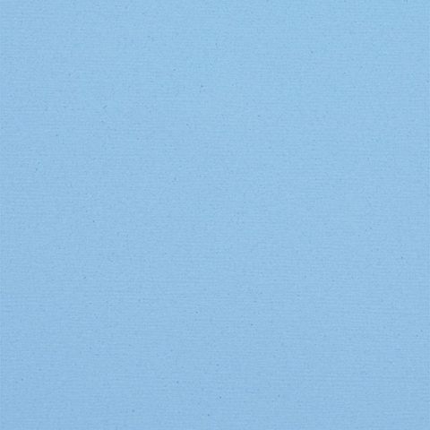
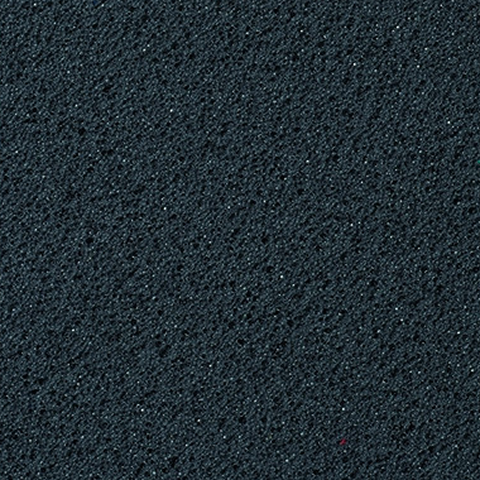
Poron MS 6 mm Blue
Hardness shore A +/- 17 Density 330 kg/m3 Size 680mm x 500mm Formulation Polyurethane PU
Lighten Diabetes 160 4mm
Hardness shore A +/- 5 Density 160 kg/m3 Size 490mm x 550mm Formulation Open-cell PU polyurethane
Case 03
Hallux Valgus
Case 03
Hallux Valgus
54 year old female, long term high heel wearer
Symptoms Pain at the big-toe joint axis, discomfort when wearing shoes
Findings Focal forefoot overpressure, exacerbated hallux valgus angle
Orthotics
Guide the big-toe into proper alignment with a dedicated hallux-alignment pad
Distribute forefoot pressure broadly using a cushioning diffusion pad
Details and Considerations
Disperse load under the MTP joint to alleviate bunion pain. Modify heel geometry to correct gait and reduce knee varus. Reinforce structural stability with a supportive heel pad. Apply soft, low-friction finishes to prevent internal rubbing. Tailor reinforcement shapes to the patient’s altered forefoot anatomy.
Layer
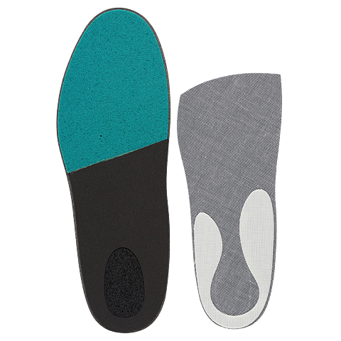
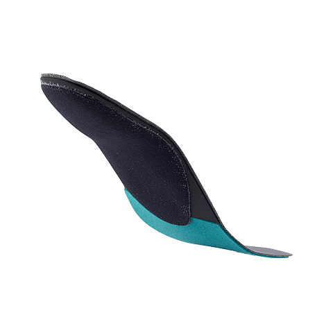
Top cover 0.8 mm EMF, black
Forefoot base 2 mm Lighten® Protect 220, green
Midfoot Base 2 mm Podiamic™ 180, black
Pad 2 mm Podiane®+, black
Reinforcement 1.5 mm Transflux®, charcoal
Resin Elementes 1 mm Transflux®, white
Corrective Element
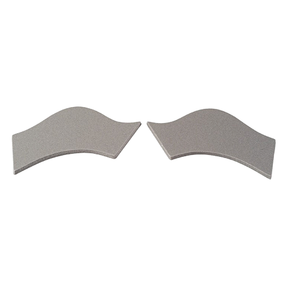

METATARSAL BAR
Retrocapital metatarsal bar. Shore 22.
STABILISER REINFORCEMENT
Pre-cut Transflux® resin stabiliser reinforcement.
Large heel ring.
Case 04
Flat Foot & Valgus Foot Deformity
Case 04
Flat Foot & Valgus Foot Deformity
14 year old male, aspiring athlete
Symptoms Foot pain and knee instability
Findings Severe collapse of the medial arch
Orthotics
Medial arch support anti-pronation element
Reinforcement of rearfoot material
Details and Considerations
Use a breathable, highly cushioned top cover for comfort and moisture management. Incorporate corrective materials under the heel to realign the rearfoot. Add extra arch-support pads to reinforce the medial longitudinal arch. Enable dynamic arch flexion for a natural gait during varied activities. Reduce rigid correction elements in favor of a movement-based, functional design.
Layer
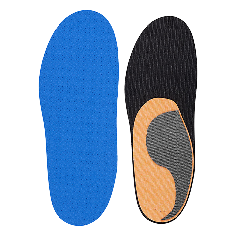
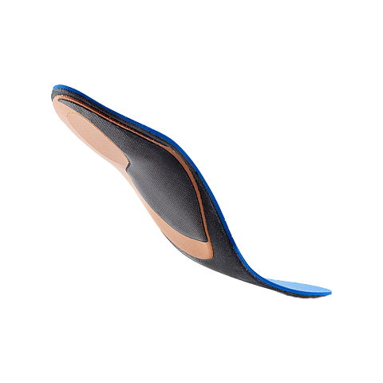
Top cover 2.5 mm Podiamic™ 160 MP, blue
Resin base 1.2 mm Podiaflex®, black
Reinforcement 1.5 mm Transflux®, orange
Resin Elementes 1 mm Transflux®, black
Corrective Element
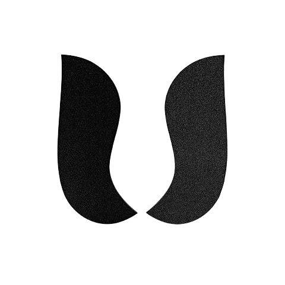
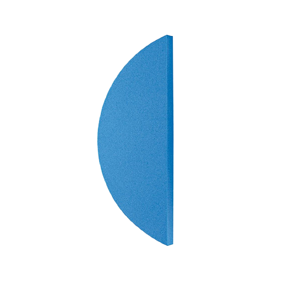
Antipronation wedge :
Supinator element. Shore 56.
Internal arch support :
Pre-cut inner half-dome Shore 24
Case 05
Cavus foot & Varus foot deformity
Case 05
Cavus foot & Varus foot deformity
38 year old male, prolonged walking
Symptoms Ankle and Achilles-tendon pain
Findings High medial arch with reduced shock absorption and over-supination tendency
Orthotics
Disperse high pressure across both forefoot and rearfoot
Prevent over-supination
Details and Considerations
Apply wedge to reduce over-supination. Add a dome or bar under the forefoot for impact-cushioning and pressure dispersion. Consider a metatarsal pad after fitting, if pain persists. Reinforce heel cup for enhanced stability.
Layer
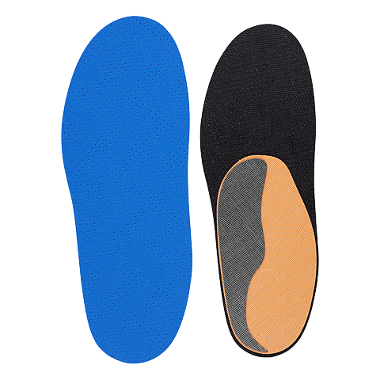
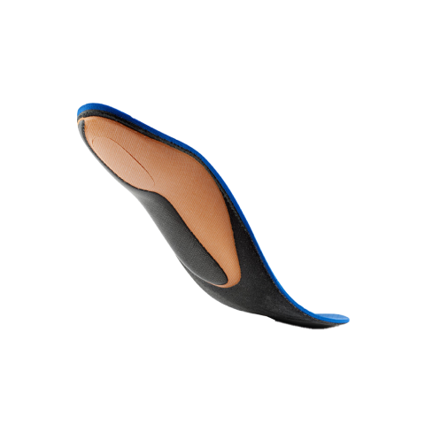
Top cover 2.5 mm Podiamic™ 160 MP, blue
Resin base 1.2 mm Podiaflex®, black
Reinforcement 1.5 mm Transflux®, orange
Resin Elementes 1 mm Transflux®, black
Corrective Element

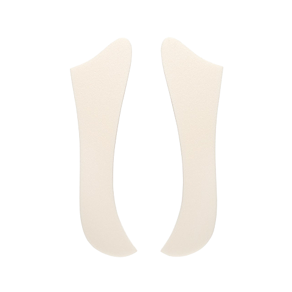
Medial retrocapital pad:
Medial retrocapital pad. Shore 22.
PRONATOR LONG WEDGE:
Pronation element. Shore 50.
Sports
A lightweight, responsive orthotics maximizes explosive propulsion and agility during intense movements, while providing unwavering stability to reduce fatigue and support peak athletic performance.
Case 01
Runner’s Knee Pain
Case 01
Runner’s Knee Pain
35 year old male, marathoner
Symptoms Lateral knee pain after long-distance runs
Findings Excessive pronation with unstable heel alignment
Orthotics
Provide arch support
Attach medial and lateral support elements
Details and Considerations
Lack of midfoot and rearfoot support exacerbates alignment imbalance. Stabilise the rearfoot to reduce knee-loading forces. Enhance shock absorption to relieve knee fatigue and pain. Incorporate antipronation feature to prevent over-pronation. Use Poron material for superior impact absorption.
Layer
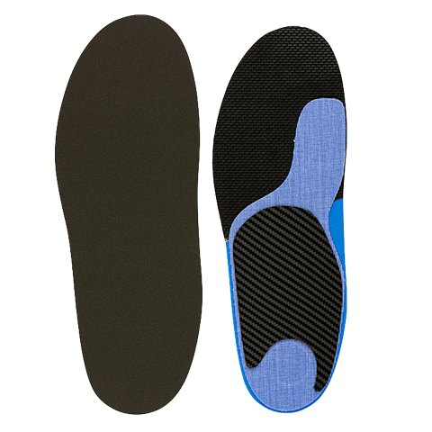
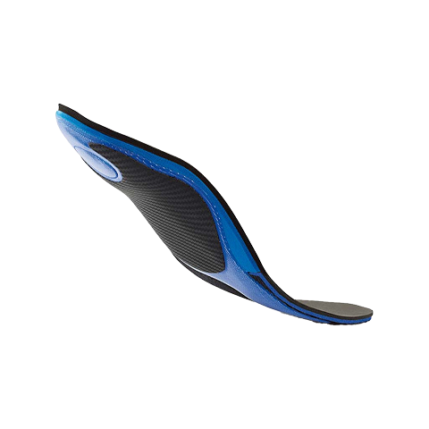
Top cover Podiamic™ 180 2 mm, black
Forefoot base Jogtene™ Light 2 mm, turquoise blue
Midfoot Base Podialene™ 200 2 mm, blue
Insert Technical material Poron® XRD 3 mm, yellow
Reinforcement Transflux® 1 mm, blue
Resin Elementes Podiaflex® Hard Carbon 1.3 mm, black
Corrective Element
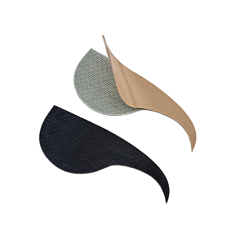
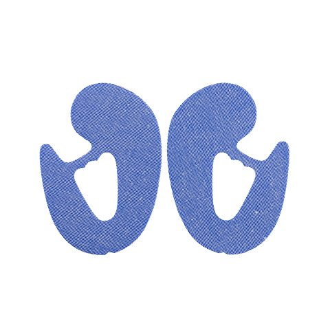
ANTIPRONATION RESIN ELEMENT
Pre-cut element, anti-pronation reinforcement in PODIAFIBER resin HARD 1 mm Black
INTERNAL REINFORCEMENT
Pre-cut internal Transflux® resin reinforcement.
Case 02
Soccer Player Dorsal Foot Pain
Case 02
Soccer Player Dorsal Foot Pain
19 year old collegiate athlete
Symptoms Dorsal foot pain during training and matches
Findings Stress on the dorsum from excessive pronation
Orthotics
Provide medial arch support
Details and Considerations
Reinforce the midfoot with Transflux® to support the medial arch. Inhibit excessive first-ray dorsiflexion. Improve midfoot stability to reduce dorsal-foot loading. Implement a wedge and evaluate pain relief before maintaining or adjusting its use.
Layer
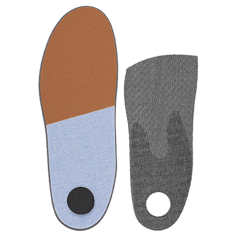
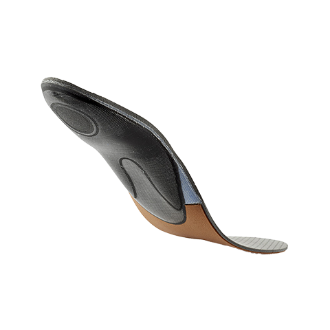
Top cover Evamic®.arg MP 2.5 mm, grey
Forefoot Expertene™ 400 1.5 mm, brow
Midfoot liner Podiaflex® 1.2 mm, blue
Insert Podiane®+ 2 mm and Progrip™ 0.8 mm, black
Midfoot liner Transflux® 1.5 mm, charcoal
Over-liner Transflux® 1 mm, black
Corrective Element

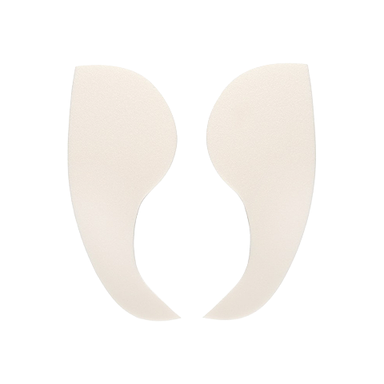
Midfoot Reinforcements
Transflux resin midfoot reinforcements in 1 or 1.5 mm versions.
SUPINATOR LONG WEDGE
Supinator element. Shore 50
Case 03
Exercise-Induced Calf Fatigue
Case 03
Exercise-Induced Calf Fatigue
30 year old male, overweight, fitness workouts
Symptoms Muscle soreness and exercise-induced fatigue
Findings Overload of calf muscles and ankle joints under high-intensity activity
Orthotics
Provide forefoot support
Use breathable materials
Details and Considerations
Enhance stability and realign the heel center with a mid-stiffness heel ring. Incorporate a high-support heel stabiliser. Employ a flexible system to prevent fatigue buildup from repeated loads. Adjust stabiliser stiffness through customised grinding. Add resin elements for extra support during high-intensity exercise.
Layer
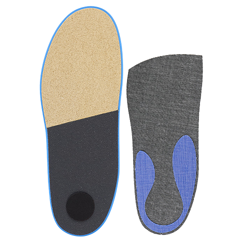
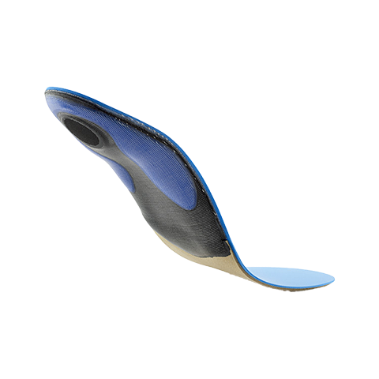
Top cover Podieva™ 55 1.5 mm, blue
Forefoot Viscotene™ 2 mm, beige
Midfoot Podiaflex® on 1.7 mm fabric, blue-grey
Insert Noène® 2 mm, black
Transflux® 1 mm, black
Transflux® 1 mm, bluel
Corrective Element

Heel Ring Elements
Stabiliser element. Shore 50.
STIFF HEEL STABILISER
Pair of pre-formed and pre-glued heel stabilisers.
Stiff. Shore 60
Case 04
Cycling-Related Forefoot Numbness
Case 04
Cycling-Related Forefoot Numbness
37 year old male, cycling club member
Symptoms Numbness in the forefoot during long rides
Findings Concentrated pressure on the forefoot contact area
Orthotics
Distribute forefoot pressure via targeted shell pattern
Employ breathable materials for ventilation
Adjust overall thickness for narrower foot widths
Details and Considerations
Design the shell pattern to offload pressure across the forefoot and relieve nerve irritation. Modify orthotics thickness when fitting narrow-width feet. Provide durable cushioning under pedal-contact regions. Add a metatarsal dome to further disperse pressure from the metatarsal heads.
Layer
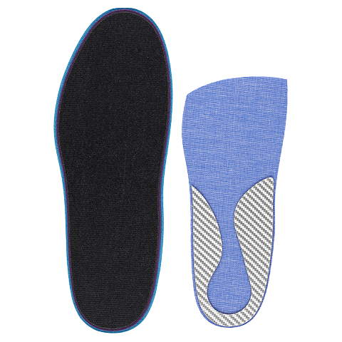
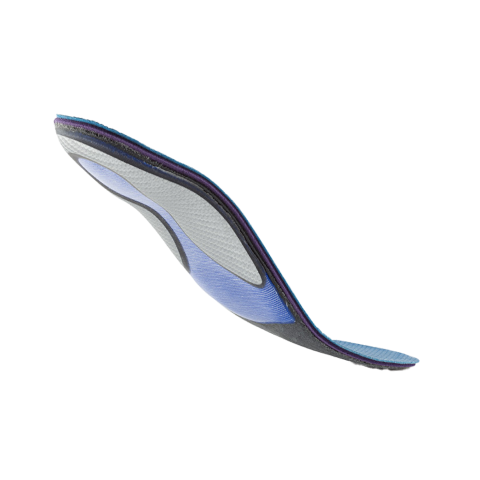
Top cover A.M.F.® MP 0.7 mm, petrol blue
Foam base Lighten® Dynamique 300 2 mm, purple
Resin base Podiaflex® 1.2 mm, black
Transflux® 1 mm, blue
Transflux® carbon 1.6 mm, silver
Corrective Element

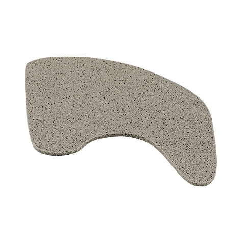
Medial retrocapital pad
Medial retrocapital pad. Shore 22.
EXPERTENE 400 PAD
Extremely hard-wearing and comfortable, thin enough to be fitted into shoes with very low volume. Shore 10.
Life Style
The sleek, breathable design and subtle cushioning help reduce fatigue during long periods of walking or standing, delivering comfort and style from the first step to the last.
Case 01
Pelvic Imbalance
Case 01
Pelvic Imbalance
32 year old female, postpartum
Symptoms Postpartum pelvic pain and uneven pelvic height
Findings Pelvic asymmetry and arch collapse causing leg-length difference
Orthotics
Provide arch support and alignment
Compensate for height difference
Improve weight distribution and absorb shock
Details and Considerations
Stabilise lower-body alignment and balance weight distribution. Use heel stabilisers to aid pelvic realignment. Adjust orthotics thickness to correct left-right elevation differences. Ensure heel-cup maintains proper elasticity. Coordinate orthotic therapy with physiotherapy and chiropractic care.
Layer
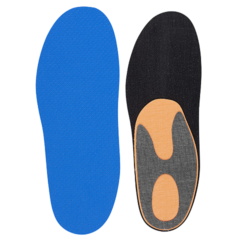
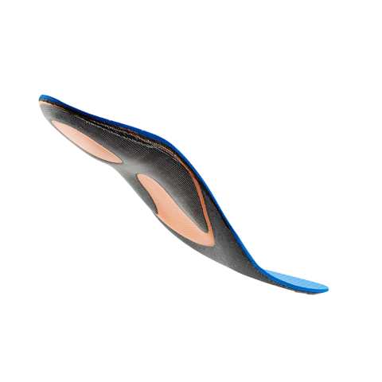
Top cover 2.5 mm Podiamic™ 160 MP, blue
Resin base 1.2 mm Podiaflex®, black
Reinforcement 1.5 mm Transflux®, orange
Resin Elementes 1 mm Transflux®, black
Corrective Element

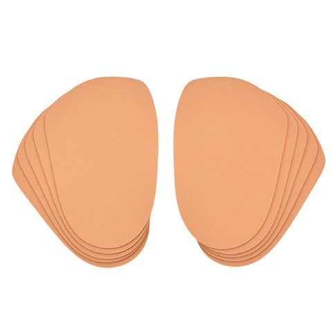
STIFF HEEL STABILISER
Pair of pre-formed and pre-glued heel stabilisers.
Stiff. Shore 60
ORTHOMIC HEEL STABILISERS
Heel stabilisers in Orthomic 2 mm and 4 mm Flesh
Case 02
Prolonged Standing Fatigue
Case 02
Prolonged Standing Fatigue
42 year old female, nurse
Symptoms Foot and calf fatigue after standing for long periods
Findings Accumulated mid and rearfoot fatigue
Orthotics
Provide mid- and rearfoot support
Incorporate high-density EVA elements
Integrate heel-ring stabiliser
Details and Considerations
Ensure rearfoot stability to reduce lower-limb fatigue. Enhance midfoot support and maintain the arch. Use a heel ring to preserve alignment and lessen fatigue during extended standing. Employ a flexible resin base to activate shock absorption.
Layer
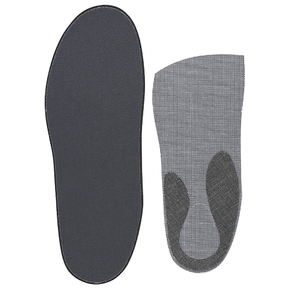
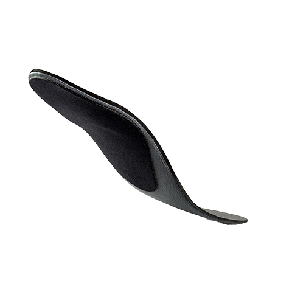
Top cover Podialene™ 125 MP 2.5 mm, black
Resin base Podiaflex® on 0.8 mm fabric, blue-grey
Liner Podiaflex® on 1.7 mm fabric, blue-grey
SO and SOM versions
Liner Transflux® 1.5 mm, charcoal grey
Over-liner Transflux® 1 mm, black
Corrective Element
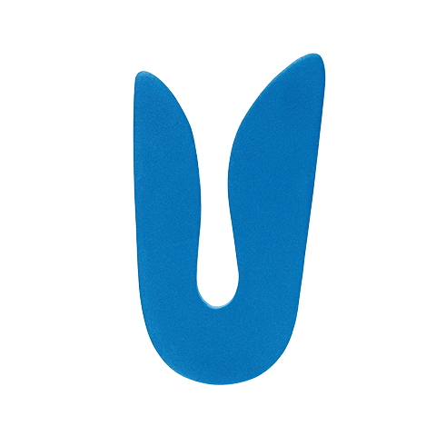
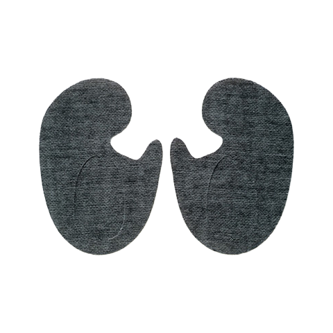
Heel Ring Elements
Stabiliser element. Shore 56.
INTERNAL PODIAFLEX®/FABRIC REINFORCEMENT
Case 03
Senior Fall Prevention
Case 03
Senior Fall Prevention
78 year old female, walker user
Symptoms Unstable gait, frequent falls
Findings Reduced plantar sensation; impaired balance
Orthotics
Build a heel-stabilising structure
Use a slip-resistant top cover
Details and Considerations
Compensate for diminished proprioception to lower fall risk and enhance stability. Employ shock-absorbing materials throughout the orthotics. Integrate stabiliser elements for overall support. Use shell-type stabiliser to limit ankle sway. Stabilisation is mandatory; if orthotics thickness is constrained, adjust the number of layers accordingly.
Layer
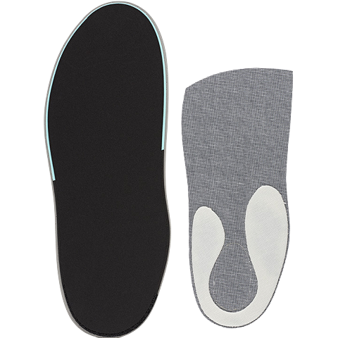
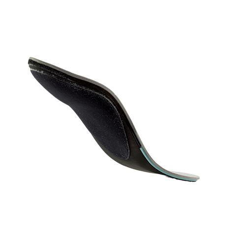
Top cover 2.5 mm Conforteva MP, grey
Forefoot 2 mm Poron® Medical, green
Midfoot 2 mm Podiamic™ 180, black
Pad 2 mm Podiane®+, black
Base 1 mm PE shore 70, black
Liner Podiaflex® on 1.7 mm hard fabric, black
Corrective Element


STABILISER REINFORCEMENT
Pre-cut Transflux® resin stabiliser reinforcement.
Large heel ring
STIFF HEEL STABILISER
Pair of pre-formed and pre-glued heel stabilisers.
Stiff. Shore 60
Case 04
Lateral Foot Discomfort
Case 04
Lateral Foot Discomfort
50 year old male, 110 kg
Symptoms Lateral forefoot pain after prolonged standing and activity
Findings Excessive pressure on the lateral forefoot due to overload
Orthotics
Incorporate a shock-absorbing structure in the forefoot
Reinforce the lateral forefoot shell
Details and Considerations
Select high-density materials able to withstand increased load. Create a pressure-dispersion pattern across the orthotics. Include dual-layer shock-absorbing elements in the lateral forefoot. Confirm sufficient shoe volume; switch to a narrow shell if space is limited. Add a large stabiliser ring for enhanced heel support.
Layer
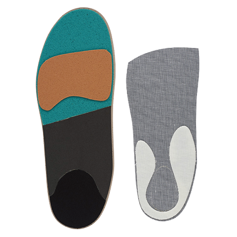
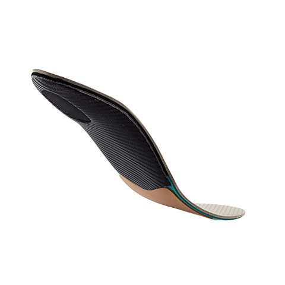
Top cover 2.5 mm Podiamic™ 125 MP, brown
Forefoot 2 mm Lighten® Protect 220, green
Forefoot PAD 1.5 mm Expertene™ 400, brown
Midfoot 2 mm Podiamic™ 180, black
Pad 2 mm Confortene, black
Liner Podiaflex® on 1.7 mm Hard fabric, black
Corrective Element
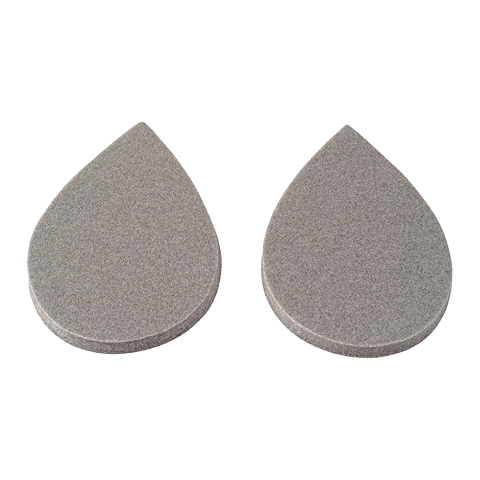
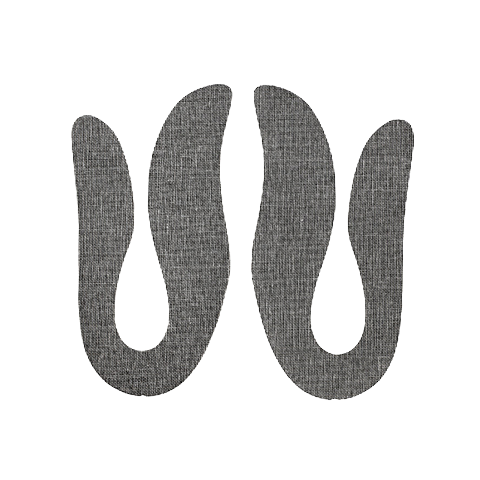
Medial retrocapital pad
Medial retrocapital pad. Shore 22.
STABILISER REINFORCEMENT
Pre-cut Transflux® resin stabiliser reinforcement.
Large heel ring
Children
The flexible multi-layer orthotics provides gentle and safe support tailored to the growth stage, promoting natural gait and encouraging healthy, balanced foot development.
Case 01
Genu Varum or Valgum
Case 01
Genu Varum or Valgum
8 year old male
Symptoms Medial collapse, excessive outward pronation
Findings Imbalanced weight bearing and alignment
Orthotics
Metatarsal alignment
Medial-lateral pressure dispersion
Details and Considerations
Design the deep heel cup to match the child’s unique alignment. Select medial or lateral correction materials based on deformity type. Encourage natural gait mechanics rather than over-correcting. Provide targeted support to balance weight transfer. Coordinate treatment with pediatric physiotherapy and chiropractic specialists.
Layer
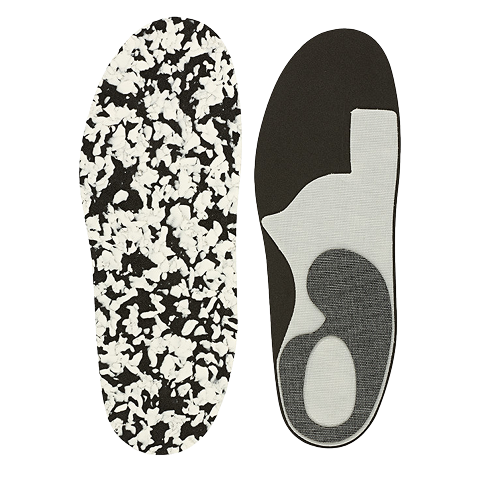
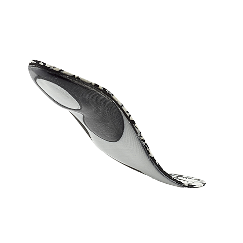
Top cover 2 mm Sport'Air, white and black
Foam base 2 mm Podiamic™ 180, black
Liner 1 mm Transflux®, white
Over-liner 1 mm Transflux®, blackk
Half-dome 4 mm firm microcellular adhesive
(supplied separately)
Corrective Element

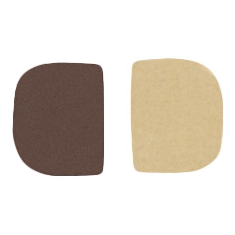
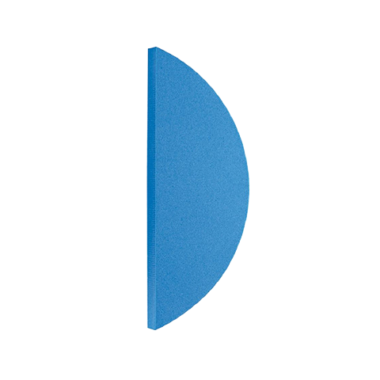
Internal arch support
Anti-pronation corner piece
Anti-supination corner piece
Case 02
Sever’s Disease
Case 02
Sever’s Disease
10 year old child
Symptoms Heel pain
Findings Impact transmitted through the growth plate during jumping and running
Orthotics
Disperse heel pressure
Protect the growth plate
Details and Considerations
Focus on heel shock mitigation common to growing feet. Use shock-absorbing heel materials. Enhance medial–lateral support and disperse rearfoot pressure. Employ a non-contact heel ring to offload and protect the growth plate.
Layer
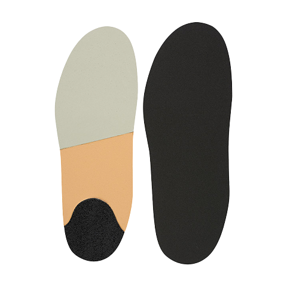
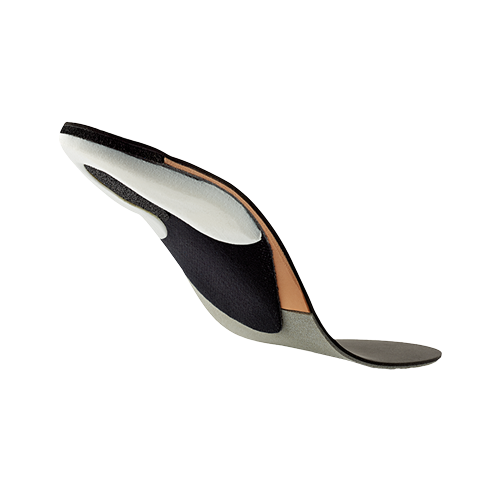
Top cover 2 mm Podiamic™ 180 MP, black
Forefoot 2 mm Viscotene™, grey
Midfoot 2 mm Orthomic®, flesh-coloured
Pad A 4 mm Podiane®+, black
Liner Podiaflex® on 1.7 mm hard fabric, black
Corrective Element
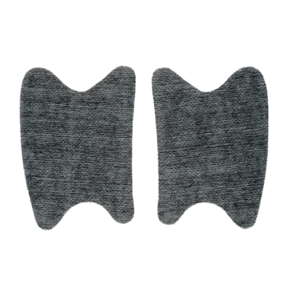

Fabric Midfoot Reinforcements
Its shape reinforces internal and external supports without adding volume to the rearfoot
Heel Ring Elements Stabiliser element. Shore 50.
CONTACT US
Homepage Privacy policy
At Healsy Orthotics
we are committed to protecting your privacy. This policy outlines how we collect, use, store, and disclose your personal information in accordance with the Australian Privacy Principles.
INFORMATION WE COLLECT
When you visit our website, interact with our staff, utilise our software, or use our products and services, we may collect the following personal information ("Personal Data")
Full name
Company name
Occupation
Email address
Phone number
Payment details
Billing address
Geographic location
IP address
Survey responses, reviews and testimonials
We may also collect information in relation to your Patients including
Names
Gender
Date of Birth
Medical Scans results
Reviews and testimonials
You can access or amend your Personal Data by logging into your account or contacting us directly.
Please note that any information you publish on our website (e.g. blog comments or testimonials) may be publicly accessible. Even if you delete this content, cached versions may still be viewable elsewhere.
USE OF YOUR INFORMATION
We use your Personal Data to
Provide and deliver our products and services
Process payments
Communicate with you
Send updates, offers, and service notifications
Gather feedback and measure customer satisfaction
Personalise your website experience
You will only receive marketing communications if you have opted in. You can unsubscribe at any time via the link in our emails or by contacting us.
Our website also uses digital identifiers such as cookies to enhance your browsing experience by
Analysing website traffic and usage
Enable social media sharing features
Provide targeted advertising through third-party platforms
Most browsers accept cookies automatically, but you can disable them via your browser settings. Doing so may limit some functionality of our website.
We may use anonymised and aggregated data (non-personally identifiable information) to
Improve our services and website functionality
Analyse customer behaviour and website usage
Serve targeted advertisements via platforms such as Google Ads and Facebook
STORAGE AND SECURITY OF DATA
We take reasonable steps to protect your Personal Data from loss, misuse, unauthorised access, or disclosure via the following protocols.
All data is stored securely on our protected servers.
Personal data stored in paper records at our company will be physically secured.
We will not record any payment information. Credit card data is encrypted during transmission and is not stored on our systems.
Personal Data may be stored or processed outside of Australia, but only in countries that provide adequate data protection.
We retain Personal Data for only as long as necessary to provide services and comply with our legal obligations.
If a data breach occurs and your information is affected, we will notify you in accordance with applicable laws.
SHARING OF YOUR INFORMATION
We do not sell, trade, or rent your Personal Data to any third party.
Your information may be shared with third parties only when necessary to
Fulfill purchases and process payments
Provide technical and marketing support
Deliver IT infrastructure and related services
Comply with legal or regulatory requirements
Protect our rights, property, or safety
Any third-party service providers we engage are required to uphold the same privacy standards outlined in this policy and are prohibited from using your data for any purpose other than providing services on our behalf.
ACCESS TO PERSONAL INFORMATION
If you ask us, we will give you access to the personal information we hold about you. We will always confirm your identity before giving access to your personal information. However, there are circumstances under Australian privacy laws where we may not give you access to the personal information we hold about you. For example, we can’t give you access if it would unreasonably affect someone else’s privacy or if giving you access poses a serious threat to someone’s life, health or safety.
LEGAL DISCLOSURES
We may disclose Personal Data if required by law or in connection with legal proceedings, regulatory investigations, or enforcement actions.
In the event of a business transfer (e.g. merger or sale), customer information may be transferred to the new owner under a confidentiality agreement.
EXTERNAL LINKS
Our website may contain links to third-party websites for your convenience. We are not responsible for the privacy practices or content of external sites. We encourage you to review their privacy policies before providing any personal information.
CHANGE IN PRIVACY POLICY
We may from time to time update our privacy policy to ensure remains current. If we decide to so, all updates will be effective immediately upon being published.
CONTACT US
If you have any queries or concerns about our privacy policy or the use of your Personal Data, please contact us at contact@heasly.com.au